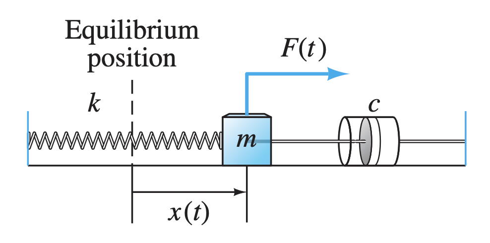

Goal: We are solving the non-homogeneous equation \(mx'' + cx' + kx = F(t)\) where we use Fourier Series to solve for periodic force.

1. Case 1: Undamped Motion (\(c=0\))
In this case, the equation simplifies to \(mx'' + kx = F(t)\).
Example 1.1: Steady Periodic Solution (Square Wave)
Find \(x_{sp}(t)\) for \(x'' + 5x = F(t)\) where \(F(t)\) is a \(2\pi\)-periodic square wave:
1. Derive Fourier Coefficients (\(b_n\))
Since \(F(t)\) is an odd function with period \(T=2\pi\), its Fourier series contains only sine terms. The coefficients are:
This evaluates to \(b_n = \frac{12}{n\pi}\) for \(n\) odd, and \(b_n = 0\) for \(n\) even.
2. Compute Derivatives and Substitute
Assume a steady periodic solution of the form \(x_{sp}(t) = \sum_{n=1}^{\infty} c_n \sin(nt)\). To substitute this into the differential equation, we first find the second derivative term-by-term:
Now, substitute \(x_{sp}''(t)\) and \(x_{sp}(t)\) into the ODE \(x'' + 5x = F(t)\):
Factor out the \(\sin(nt)\) terms on the left-hand side to group the coefficients:
3. Equate Coefficients and Check for Resonance
By equating the coefficients of \(\sin(nt)\) for each \(n\), we obtain the algebraic equation:
Since \(n\) is always an integer (\(n = 1, 2, 3, \dots\)), it follows that \(n^2 \neq 5\) for any \(n\). Therefore, for all \(n\) we can solve for \(c_n\):
4. Final Series Solution
Substituting \(b_n = \frac{12}{n\pi}\) for odd values of \(n\):
Example 1.2: Steady Periodic Solution
Find \(x_{sp}(t)\) for \(x'' + 3x = F(t)\), where \(F(t)\) is an odd function of period \(2\pi\) with \(F(t) = 9t\) for \(0 < t < \pi\).
1. Derive Fourier Coefficients (\(b_n\))
Since \(F(t)\) is an odd function with period \(T=2\pi\), its Fourier series consists only of sine terms. We calculate the coefficients \(b_n\) using integration by parts:
2. Compute Derivatives and Substitute
Assume a steady periodic solution of the form \(x_{sp}(t) = \sum_{n=1}^{\infty} c_n \sin(nt)\). To substitute this into the differential equation \(x'' + 3x = F(t)\), we find the second derivative:
Substituting both into the left-hand side of the ODE:
Factoring the sine terms to group the coefficients:
3. Equate Coefficients
By comparing the coefficients of \(\sin(nt)\) on both sides for each integer \(n\), we get:
Since \(n\) is an integer (\(n = 1, 2, 3, \dots\)), \(n^2\) will never equal \(3\). Because \(3 - n^2 \neq 0\), we can safely solve for \(c_n\):
4. Final Series Solution
Substituting the expression for \(c_n\) back into the assumed form of \(x_{sp}(t)\):
1.3 Special Case: Pure Resonance
Pure Resonance: Occurs if there exists an integer \(n\) such that the driving frequency \(\omega_n\) equals the natural frequency \(\omega_0 = \sqrt{k/m}\).
Example 1.4: Pure Resonance Check
Determine if pure resonance occurs for \(9x'' + 36x = F(t)\), where \(F(t)\) is an odd function of period \(2L = 2\) with \(F(t) = 3\) for \(0 < t < 1\).
To determine if pure resonance occurs, we compare the natural frequency of the system to the driving frequencies found in the Fourier series of the forcing function \( F(t) \).
1. Find the Natural Frequency \(\omega_0\)
2. Find the Driving Frequencies \(\omega_n\)
The forcing function \( F(t) \) is an odd function with period \( 2L = 2 \), which means \( L = 1 \). The Fourier series for an odd function consists of sine terms with frequencies:
3. Check for Resonance
Pure resonance occurs if there exists an integer \( n \) such that the driving frequency matches the natural frequency:
Solving for \( n \):
Since \( \frac{2}{\pi} \) is not an integer, there is no term in the Fourier series of \( F(t) \) that matches the natural frequency of the system.
Conclusion: Pure resonance does not occur.
Example 1.5: Pure Resonance Check (Comparison)
Consider a mass-spring system with \(m = 2\) and \(k = 32\). Determine if pure resonance occurs when the system is driven by the following periodic forces (\(T = 2\pi\)):-
Square Wave:
\[ F(t) = \begin{cases} 1 & 0 < t < \pi \\ -1 & -\pi < t < 0 \end{cases} \]
-
Sawtooth Wave:
\[ F(t) = t, \quad -\pi < t < \pi \]
1. Calculate Natural Frequency
For a system with \(m = 2\) and \(k = 32\), the natural frequency is:
2. Case (a): Square Wave
The Fourier sine coefficients for the Square Wave on \((0, \pi)\) are:
- If \(n\) is even:
- If \(n\) is odd:
The driving frequencies are \( \omega_n = \{1, 3, 5, \dots\} \). Since \( 4 \) is not in this set, pure resonance does not occur.
3. Case (b): Sawtooth Wave
The Fourier sine coefficients for \( F(t) = t \) are found via integration by parts:
- For any integer \( n \), \( b_n = \frac{2}{n}(-1)^{n+1} \).
- Specifically, for \( n=4 \), \( b_4 = -\frac{1}{2} \neq 0 \).
The driving frequencies are \( \omega_n = \{1, 2, 3, 4, \dots\} \). Since \( \omega_4 = \omega_0 = 4 \), pure resonance occurs.
| Waveform | Harmonics (\(n\)) | Term \(n=4\) Present? | Resonance? |
|---|---|---|---|
| Square | Odd only | No (\(b_4 = 0\)) | No |
| Sawtooth | All Integers | Yes (\(b_4 \neq 0\)) | Yes |
2. Case 2: Damped Forced Motion (\(c > 0\))
For \(mx'' + cx' + kx = F(t)\), the response to \(F_0 \sin(\omega t)\) is \(x(t) = C \sin(\omega t - \alpha)\):
Example 2.1: Damped Steady Periodic Solution
Suppose m = 5 kg, c = 0.4 N·s/m, and k = 245 N/m. Compute the first few terms for the steady periodic motion \(x_{sp}(t)\) of the mass under the influence of the external force \(F(t)\), where \(F(t) = 3\) if \(0 < t < \pi\) and \(F(t)=-3\) if \(\pi < t < 2\pi\).
Given the formulas:
The steady periodic motion is defined by the series:
where \(\alpha_n\) is the angle measured using the formula:
\[\alpha_n = \tan^{-1} \left( \frac{c n}{k - m n^2} \right), \quad 0 \le \alpha_n \le \pi\]1. Determine Forcing Coefficients \(B_n\)
The forcing function \(F(t)\) is an odd square wave with amplitude \(A = 3\) and period \(T = 2\pi\) (\(L = \pi\)). The Fourier sine coefficients are derived as follows:
-
If \(n\) is even:
\[ \cos(n\pi) = 1 \implies B_n = \frac{6}{n\pi}(1 - 1) = 0 \]
-
If \(n\) is odd:
\[ \cos(n\pi) = -1 \implies B_n = \frac{6}{n\pi}(1 - (-1)) = \frac{12}{n\pi} \]
The first four nonzero terms correspond to \(n = 1, 3, 5, 7\).
2. Physical System Parameters
3. Numerical Results
| \(n\) | Forcing (\(B_n\)) | Amplitude (\(C_n\)) | Phase (\(\alpha_n\)) |
|---|---|---|---|
| 1 | 3.8197 | 0.0159 | 0.0017 rad |
| 3 | 1.2732 | 0.0064 | 0.0060 rad |
| 5 | 0.7639 | 0.0064 | 0.0167 rad |
| 7 | 0.5457 | 0.1949 | 1.5708 (\(\pi/2\)) |
Observation: The term \(n=7\) dominates the motion because the driving frequency matches the natural frequency \(\omega_0 = \sqrt{245/5} = 7\) (even though its input force coefficient \(B_7\) is smaller than \(B_1\)), leading to practical-resonance.
4. Final Series Expansion
The first four nonzero terms of the steady periodic solution are: